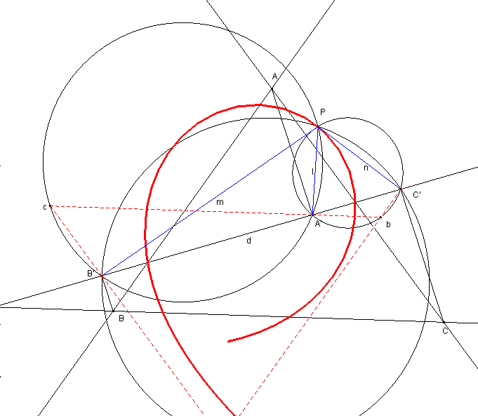

Problema de investigación
Propuesto por José Carlos Chavez Sandoval, estudiante peruano de Matemática Pura en la Universidad Nacional Mayor de San Marcos
Problema 309.
Sea, en un mismo plano, un triángulo ABC y una recta arbitraria d. Y sea φ un ángulo tal que 0≤φ≤π.
Sobre d tomamos tres puntos A', B', C' de manera que cada recta AA', BB', CC' forme con d un ángulo φ.
Sean l, m, n tres rectas por A', B', C' respectivamente; de tal modo que el ángulo entre l y BC sea –φ igual al que forman m con CA y n con AB.
Demostrar que l, m, n son concurrentes.
Chavez, J C. (2006): Comunicación personal.
Solución de François Rideau, Maitre de Conférences à l'Université de Paris 7.
Las rectas AA', BB' CC' son paralelas.

Este ejercicio es una consecuencia de la isogonología de Durán Loriga.
La aplicación afín es tal que F(A) = A', f(B)=B' f(C)=C', es φ isogonológica y el resultado es la consecuencia directa.
En el fondo es una generalización de la teoría del ortopolo cuando φ = Pi/2.
Evidentemente todo ello puede demostrarse directamente sin usar esta teoría.
El punto P de concurso de las rectas l, m y n es el centro de semejanza de los triángulos abc semejantes directamente al triángulo ABC y tal que
A' está sobre bc, B' sobre ca, y C' sobre ab.
P es así el punto de Miquel del triángulo abc y de su transversal d.
Es fácil de ver el lugar de P cuando φ varía, siendo la recta d constante.
¡Cabri traza una cúbica con un punto doble!.